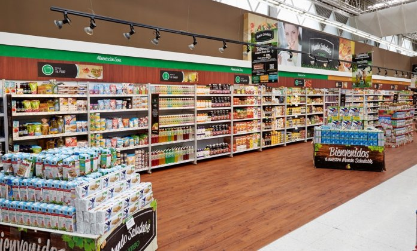
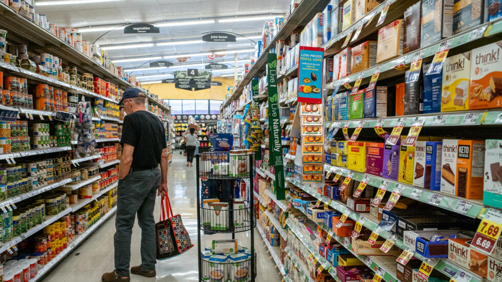
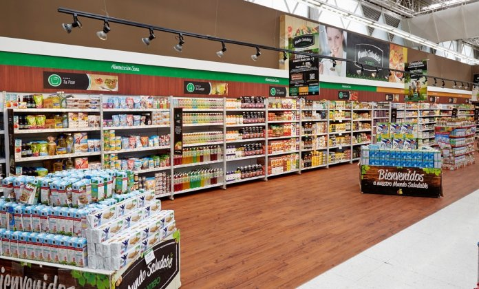
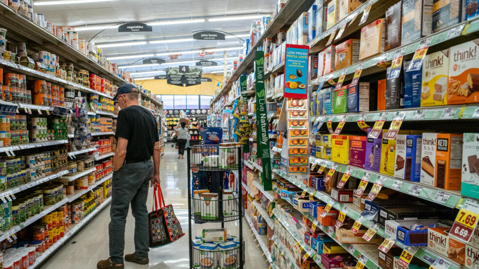

Historia de EcoMarket
El supermercado “EcoMarket” nació en 1995 como un pequeño negocio familiar en la ciudad de Monteverde. Fundado por María y José Gómez, EcoMarket se estableció con la visión de ofrecer productos frescos y de calidad a precios accesibles, fomentando el consumo de productos locales y sostenibles. Con un fuerte compromiso con la comunidad y el medio ambiente, el supermercado creció rápidamente gracias a su enfoque en el servicio al cliente y la sustentabilidad. Hoy en día, EcoMarket cuenta con varias sucursales en toda la región, pero sigue manteniendo los valores y la dedicación con los que empezó, brindando a sus clientes una experiencia de compra única y responsable.
Algunas imagenes de las instalaciones
 



Descripcion de EcoMarket
EcoMarket es un supermercado y almacén integral que combina la conveniencia de una tienda moderna con la calidez y atención personalizada de un negocio local. Ubicado en el corazón de Monteverde, ofrece una amplia variedad de productos frescos, orgánicos y locales, así como una sección dedicada a artículos para el hogar, utensilios de cocina y productos de limpieza ecológicos. Su diseño acogedor y bien organizado facilita una experiencia de compra agradable, donde los clientes pueden encontrar todo lo que necesitan en un solo lugar, promoviendo al mismo tiempo prácticas de consumo responsable y sostenibilidad.
Info general
Compromiso:
- Servicio al Cliente: Atención personalizada y cálida.
- Sostenibilidad: Promoción de prácticas de consumo responsable y productos ecológicos.
- Comunidad: Apoyo a productores locales y desarrollo comunitario.
- Secciones bien delimitadas para alimentos frescos, productos orgánicos, artículos para el hogar y limpieza.
- Ambientes acogedores y organizados para una experiencia de compra placentera.
- Lunes a Sábado: 8:00 AM - 8:00 PM
- Domingo: 9:00 AM - 6:00 PM